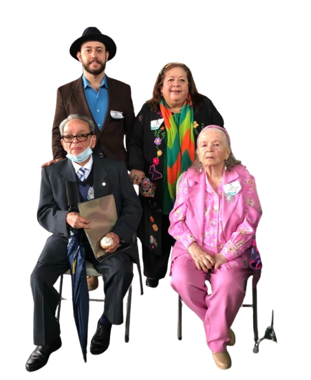

50 años de historia y comunidad
El Liceo Hernán Vargas Ramírez celebró sus 50 años junto a la comunidad de Juan Viñas, familiares de don Hernán Vargas Ramírez, representantes comunales y autoridades educativas. Esta conmemoración destacó el valor histórico del liceo como una institución que ha contribuido al desarrollo educativo y social del cantón de Jiménez y de las comunidades cercanas.
La celebración recordó el legado de Hernán Vargas Ramírez y de quienes impulsaron oportunidades educativas para las familias de la zona. En medio de actos culturales, participación comunitaria y un ambiente de agradecimiento, se reafirmó el compromiso del liceo con una educación de calidad para las y los adolescentes del cantón.
